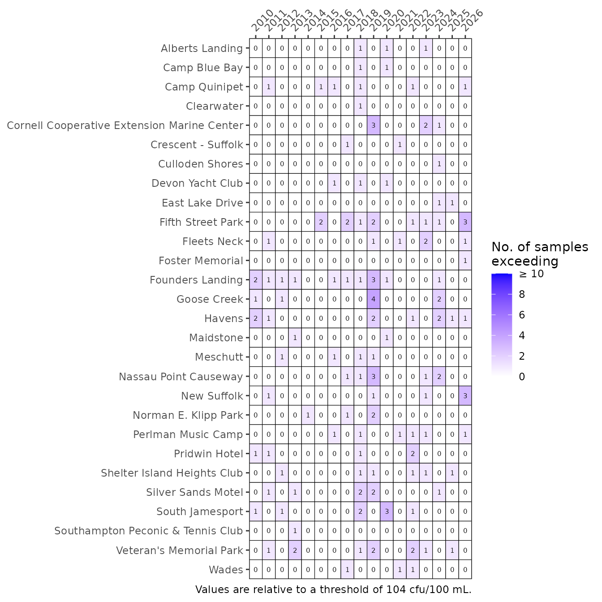
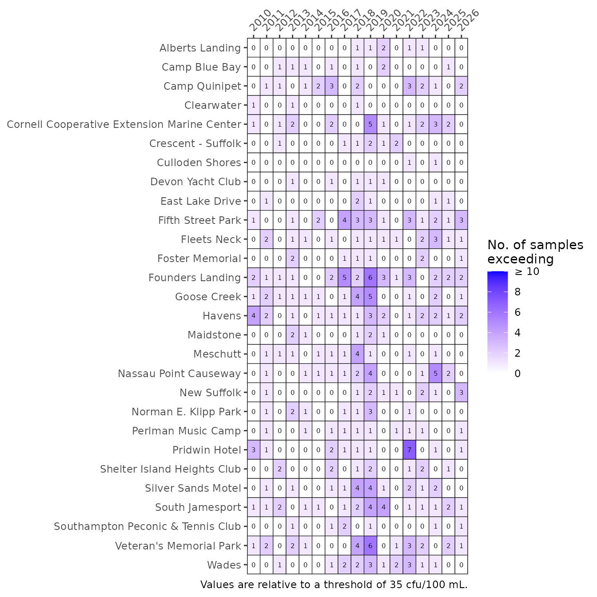
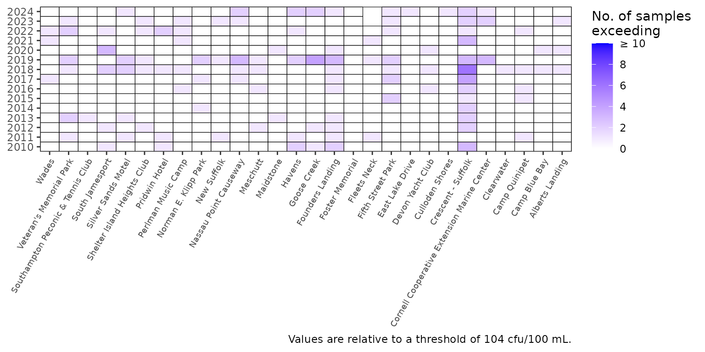

Beach Pathogens
pathogens.RmdRegular monitoring of swimming beach pathogens is conducted by Suffolk County Department of Health Services (SCDHS). As noted on the Suffolk County website (https://www.suffolkcountyny.gov/Departments/Health-Services/Environmental-Quality/Ecology/Beach-Monitoring-Program), water quality at swimming beaches can be adversely affected by episodic sources such as stormwater runoff, wastewater discharges from boats or land-based septic systems, and fecal material from pets and wildlife. To provide information on the potential presence of pathogens public in swimming areas that may be impacted by such contamination, the Suffolk County Department of Health Services (SCDHS) conducts a comprehensive bathing beach water quality monitoring program from May through September each year. Sampling is performed by SCDHS staff, with analyses conducted by the Department’s accredited Public and Environmental Health Laboratory (PEHL). Data are available here.
Information from this monitoring program can be summarized to communicate the relative risk of exposure to pathogens at bathing beaches in the Peconic Estuary. Functions in the peptools package can be used to import the pathogen data provided by SCHDS and PEHL, analyze relative exceedances of pathogen criterion, and plot the results in an easily interpretable format. This vignette describes use of these functions.
For package installation instructions, please see the Introduction vignette.
Data import and processing
The beaches data object includes 31 beaches that are
relevant for assessing pathogen exposure risk for the Peconic Estuary
Program.
beaches
#> Name FieldNum Tier
#> 1 Alberts Landing Beach EH7 3
#> 2 Camp Blue Bay Beach EH2 2
#> 3 Camp Quinipet Beach ST1 3
#> 4 Clearwater Beach EH3 3
#> 5 Cornell Cooperative Extension Marine Center Beach S25 3
#> 6 Crescent Beach - Suffolk ST3 3
#> 7 Culloden Shores Beach EH4 3
#> 8 Devon Yacht Club Beach EH39 3
#> 9 East Lake Drive Beach EH12 3
#> 10 Fifth Street Park Beach S12 2
#> 11 Fleets Neck Beach S16 3
#> 12 Foster Memorial Beach SH9 3
#> 13 Founders Landing Beach S14 2
#> 14 Goose Creek Beach S13 2
#> 15 Havens Beach EH1 2
#> 16 Maidstone Beach EH5 3
#> 17 Meschutt Beach SH5 3
#> 18 Nassau Point Causeway Beach S15 3
#> 19 New Suffolk Beach S17 3
#> 20 Norman E. Klipp Park Beach S11 3
#> 21 Perlman Music Camp Beach ST10 3
#> 22 Pridwin Hotel Beach ST2 3
#> 23 Shelter Island Heights Beach Club Beach ST6 2
#> 24 Silver Sands Motel Beach S26 3
#> 25 South Jamesport Beach R14 3
#> 26 Southampton Peconic Beach & Tennis Club Beach SH7 3
#> 27 Veteran's Memorial Park Beach S18 3
#> 28 Wades Beach ST4 3
#> geometry
#> 1 -72.11667, 41.00013
#> 2 -72.17883, 41.03910
#> 3 -72.37873, 41.07053
#> 4 -72.16710, 41.05097
#> 5 -72.38863, 41.03622
#> 6 -72.36563, 41.07412
#> 7 -71.94862, 41.07292
#> 8 -72.10570, 40.99253
#> 9 -71.93562, 41.07820
#> 10 -72.36612, 41.09298
#> 11 -72.46508, 41.00562
#> 12 -72.32688, 40.99640
#> 13 -72.41335, 41.06050
#> 14 -72.41348, 41.05227
#> 15 -72.28425, 41.00068
#> 16 -72.1862, 41.0344
#> 17 -72.49992, 40.89483
#> 18 -72.44713, 41.01513
#> 19 -72.47195, 40.98980
#> 20 -72.34915, 41.11078
#> 21 -72.37360, 41.07082
#> 22 -72.37558, 41.07012
#> 23 -72.35878, 41.08598
#> 24 -72.37583, 41.09417
#> 25 -72.56870, 40.94198
#> 26 -72.48165, 40.89703
#> 27 -72.53128, 40.97738
#> 28 -72.33427, 41.04942The beaches can be mapped as follows:
library(leaflet)
library(sf)
leaflet(sf::st_transform(beaches, 4326)) %>%
addProviderTiles('Esri.WorldGrayCanvas', group = 'World Gray') %>%
addProviderTiles('Esri.WorldImagery', group = 'World Imagery') %>%
addProviderTiles('Esri.WorldTopoMap', group = 'World Topo Map') %>%
addLayersControl(baseGroups = c('World Gray', 'World Imagery', 'World Topo Map')) %>%
addCircleMarkers(radius = 6, color = 'black', weight = 1, fillColor = 'tomato', fillOpacity = 0.8, label = ~Name)The pathogen data for these beaches can be imported using the
read_pepent() function. This function retrieves data
directly from an ArcGIS REST service available at https://gis.suffolkcountyny.gov/hosted/rest/services/Hosted/Beach_Water_Quality_Data/FeatureServer/.
The API is queried by beach names in the beaches data
object. The queries are done individually for each beach to not exceed
the 2000 record limit. A spreadhseet including the same data can also be
downloaded from here.
The import function is used as follows:
entdat <- read_pepent()
head(entdat)#> Name FieldNum Date value status
#> 1 Alberts Landing Beach EH7 2010-06-29 4 =
#> 2 Alberts Landing Beach EH7 2010-07-27 4 =
#> 3 Alberts Landing Beach EH7 2010-08-13 28 =
#> 4 Alberts Landing Beach EH7 2011-06-22 4 =
#> 5 Alberts Landing Beach EH7 2011-07-20 4 =
#> 6 Alberts Landing Beach EH7 2011-08-17 4 =The data can also be imported from a local file using the
path argument.
entdat <- read_pepent(path = '~/Desktop/pathogen_data.xlsx')The raw data includes concentrations of Enterococcus
bacteria as cfu/100 mL for swimming beaches in Suffolk County. The
fields include beach name (Name), field number
(FieldNum), collection date and time (Date as
Eastern Standard Time), bacteria concentration (value), and
status showing if the observation was above or below
detection (indicated as > or <).
The function anlz_entpep() summarizes the imported data
at each beach to quantify instances when bacterial concentrations were
at risk of impacting human health. For Suffolk County, all bathing
beaches are ranked by relative risk of exposure to harmful bacteria.
Factors considered in the ranking include pollution threats (outfalls,
discharges, runoff, marinas, etc.), beach location, historical
monitoring data, and beach use. Most beaches in the Peconic Estuary are
Tier 3 (lowest tier). For the peptools package, the
Enterococcus data were used to count the number of instances at
each beach when concentrations were above 104 cfu/ml. Although this does
not mean a beach was closed, relative exceedances provide a coarse
measure of potential risk of exposure to harmful pathogens.
The anlz_entpep() function estimates this exposure risk
by counting the number of instances in a year when concentrations at a
beach exceeded the threshold for each 24 hour period in the dataset. The
results show samples for number of days sampled each year
and number of exceedances for the samples. Only the 28
relevant beaches for the Peconic Estuary are returned.
anlz_entpep(entdat)
#> # A tibble: 418 × 4
#> Name yr samples exceedances
#> <chr> <dbl> <int> <int>
#> 1 Alberts Landing 2010 3 0
#> 2 Alberts Landing 2011 3 0
#> 3 Alberts Landing 2012 4 0
#> 4 Alberts Landing 2013 3 0
#> 5 Alberts Landing 2014 4 0
#> 6 Alberts Landing 2015 3 0
#> 7 Alberts Landing 2016 5 0
#> 8 Alberts Landing 2017 3 0
#> 9 Alberts Landing 2018 6 1
#> 10 Alberts Landing 2019 3 0
#> # ℹ 408 more rowsThe anlz_entpep() function includes an optional
arguments for the threshold (thr). The default values are
104 cfu/100 mL, which can easily be changed. Here we use a threshold of
50 cfu/100 mL.
anlz_entpep(entdat, thr = 50)
#> # A tibble: 418 × 4
#> Name yr samples exceedances
#> <chr> <dbl> <int> <int>
#> 1 Alberts Landing 2010 3 0
#> 2 Alberts Landing 2011 3 0
#> 3 Alberts Landing 2012 4 0
#> 4 Alberts Landing 2013 3 0
#> 5 Alberts Landing 2014 4 0
#> 6 Alberts Landing 2015 3 0
#> 7 Alberts Landing 2016 5 0
#> 8 Alberts Landing 2017 3 0
#> 9 Alberts Landing 2018 6 1
#> 10 Alberts Landing 2019 3 0
#> # ℹ 408 more rowsPlotting results
A summary graphic can be plotted using the
show_entmatrix() function. This creates an annual reporting
matrix for the relative risk of pathogen exposure at 28 selected beaches
in the Peconic Estuary. Tracking the number of exceedances of bacterial
concentrations provides a framework for identifying locations that may
need management actions to remediate potential public health issues.
show_entmatrix(entdat)
Exceedances of Enterococcus concentrations at Peconic Estuary bathing beaches for the years 2010 through 2024. Values are number of samples exceeding.
The anlz_entpep() function is used internally in
show_entmatrix(), such that the optional argument for the
threshold (thr) also applies in the plotting function.
Appropriate thresholds should be identified. Potential alternatives can
be viewed by using a different value for the thr
argument.
show_entmatrix(entdat, thr = 35)
Exceedances of Enterococcus concentrations at Peconic Estuary bathing beaches for the years 2010 through 2024. A different option is used for the threshold argument.
The matrix is also a ggplot object and its layout can be
changed using ggplot elements. Note the use of
txtsz = NULL to remove the text labels.
show_entmatrix(entdat, txtsz = NULL) +
scale_x_discrete(expand = c(0,0), breaks = c(2000:2024)) +
coord_flip() +
theme(axis.text.x = element_text(angle = 60, hjust = 1, size = 7))